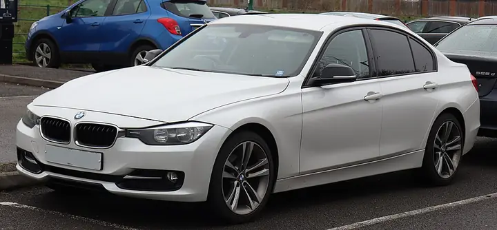

No free photo yet
Alfa Romeo Giulia
2015 Alfa Romeo Giulia (952) · 2015–present
Duel
The Alfa Romeo Giulia (2015–present) against the BMW 3 Series (2011–2018). The Giulia 952 is 15 mm longer and 10 mm longer in wheelbase than the BMW 3 Series F30 (first figures given).
No free photo yet
2015 Alfa Romeo Giulia (952) · 2015–present

Sixth generation (F30/F31/F34/F35; 2011) · 2011–2018
| Production | 2015–present | October 2011 – October 2018 |
|---|---|---|
| Body | 4-door saloon | 4-door sedan (F30/F35)5-door wagon (F31)5-door fastback (F34) |
| Layout | Front-engine, rear-wheel-drive/all-wheel-drive | Front-engine, rear-wheel-driveFront-engine, all-wheel-drive (xDrive) |
| Engines | Petrol:2.0 L FCA GME T4 Multiair turbo I42.9 L 690T twin-turbo V6Diesel:2.2 L CNH Industrial JTDm Multijet II I4 | Petrol:1.5 L B38 I3 turbo1.6 L N13 I4 turbo2.0 L N20 I4 turbo2.0 L B48 I4 turbo3.0 L N55 I6 turbo3.0 L S55 I6 turbo3.0 L B58 I6 turbo |
| Gearbox | 6-speed manual (Getrag G217)6-speed manual (ZF S6-53, Quadrifoglio)8-speed automatic (ZF 8HP50)8-speed automatic (ZF 8HP75, Quadrifoglio) | 6-speed manual8-speed ZF 8HP automatic |
| Length | 4639 mm | 4624–4643 mm (F30/31)4734 mm (F35)4824 mm (F34) |
| Width | 1873 mm | 1811 mm1828 mm (F34) |
| Height | 1426 mm | 1429–1434 mm (F30/31)1455 mm (F35)1508 mm (F34) |
| Wheelbase | 2820 mm | 2810 mm (F30/31)2920 mm (F34/35) |
| Weight | 1445 kg 2.2 diesel3627 lb 2.0 RWD3660 lb 2.0 AWD3822 lb Quadrifoglio | 1385–1769 kg (F30, including hybrid models)1465–1767 kg (F31)1540–1650 kg (F35)1540–1780 kg (F34) |
Sources: Wikipedia: Alfa Romeo Giulia (2015) · Wikipedia: BMW 3 Series (F30).